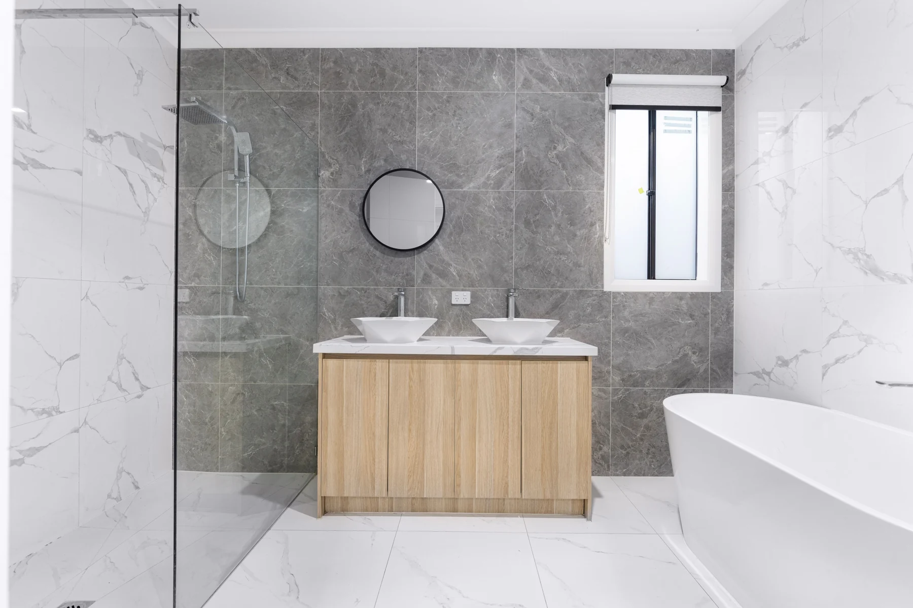

Ambientes em transformação
Referência visual de um espaço interno durante o processo de construção ou reforma.
Compartilhe as informações essenciais para iniciar uma conversa produtiva sobre a obra.
Referências visuais: as imagens abaixo vêm de arquivos públicos e de uma fotografia dedicada ao domínio público (CC0). Elas são referências históricas e ilustrativas; não representam obras, clientes ou integrantes da equipe da Construprimer.
Referência visual de um espaço interno durante o processo de construção ou reforma.

Inspiração para pensar a integração de ambientes, materiais e acabamentos em uma residência.

Referência visual para escolhas de revestimentos, metais e acabamentos de banheiro.
As fotografias são imagens ilustrativas e não representam obras, clientes ou integrantes da equipe da Construprimer.
Descreva o que pretende construir, reformar, melhorar ou concluir.
Informe cidade e bairro para dar contexto ao seu pedido.
Conte se está iniciando o planejamento, se já possui projeto ou se a execução começou.